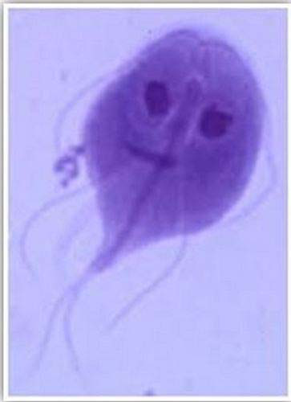
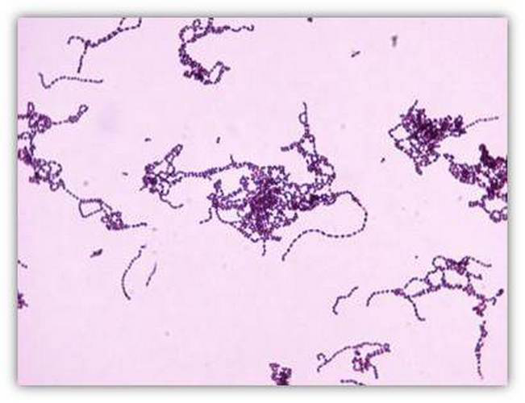
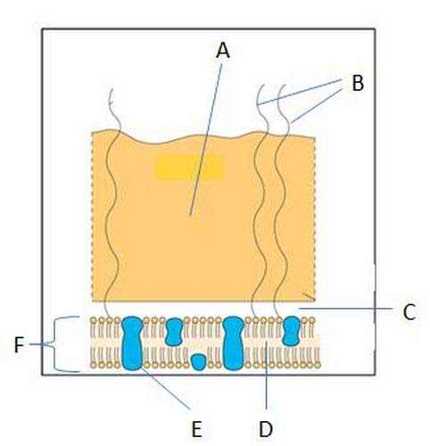
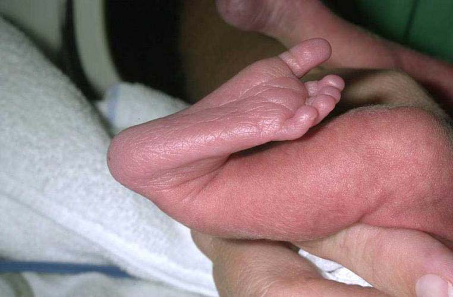
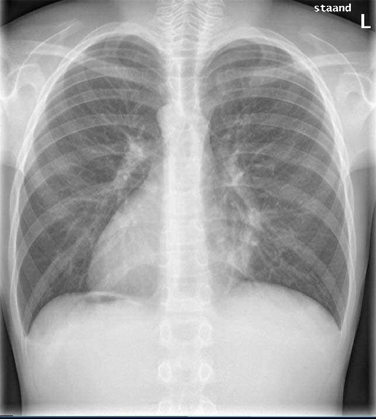

Vraag 1

Kies de juiste alternatieven.
Vijfjarige Emma klaagt al enige maanden over buikpijn. Het is haar moeder opgevallen dat zij af en toe vettige diarree heeft. Op het consultatiebureau wordt een iets naar beneden afwijkende groeicurve geconstateerd (onder de P50), terwijl ze daar eerst boven zat. De consultatiebureau-arts besluit een triple fecestest in te sturen waarbij in het directe preparaat deze structuur gevonden wordt (zie foto). Dit is een met de naam .
Vraag 2
Geef voor elk van de onderstaande structuren aan of het micro-organisme deze wel of niet bevat.
Bacteriën bevatten een celmembraan
Bacteriën bevatten een celwand
Bacteriën bevatten een celkern
Virussen bevatten een celmembraan
Virussen bevatten een celwand
Virussen bevatten een celkern
Schimmels bevatten een celmembraan
Schimmels bevatten een celwand
Schimmels bevatten een celkern
Vraag 3
De ID50 (‘infective dose’) van bacterie A is lager dan die van bacterie B.
Om ziek te worden:
Vraag 4
Een neonaat ontwikkelt 2 dagen na de geboorte koorts en drinkt nauwelijks meer. De moeder heeft ook koorts (38,8 °C), buikpijn en stinkende lochia. Je denkt aan een neonatale sepsis. Na 6 uur groei in het bloedkweekapparaat worden er in het Grampreparaat van de bloedkweek van zowel de moeder als het kind deze bacteriën gezien (zie foto).
Wat is de meest waarschijnlijke verwekker?

Vraag 5
Welke virus kan zowel de mens als een andere diersoort infecteren?
Vraag 6
Een 7-jarige jongen, die in een rolstoel zit i.v.m. aangeboren hersenletsel, heeft een rood gezwollen been en koorts. Inspectie van het been laat een duidelijk begrensde plek van roodheid (erytheem) en een paar blaren zien. Het Grampreparaat van pus uit zo’n blaar laat Grampositieve kokken in ketens zien. De volgende dag groeien er bètahemolytische kolonies op de schapenbloedplaat.
Wat zijn de eigenschappen van deze kolonies?
Vraag 7
Een congenitale infectie is een infectie opgelopen:
Vraag 8
Dit is een schematische tekening van een bacterie. Wat wordt aangegeven met de letter A? (zie afbeelding)

Vraag 9
Micro-organismen gebruiken allerlei strategieën om de afweer te ontwijken. Koppel elke strategie aan het micro-organisme dat het zo doet.
Sleep een optie naar de bijbehorende rij, of tik eerst op een kaart en dan op een rij.
Afweer verzwakken
Sleep hier naartoe
Ontwijken van afweer
Sleep hier naartoe
Schuilhouden
Sleep hier naartoe
Verandering van antigeen
Sleep hier naartoe
Vraag 10
Op een kinderdagverblijf heerst waterpokken. Een groepsleidster is 16 weken zwanger en maakt zich zorgen over haar baby. Ze weet niet zeker of ze als kind waterpokken heeft doorgemaakt.
Wat dient er nu te gebeuren?
Vraag 11
Welk virus wordt via axonen getransporteerd?
Vraag 12
Wat is de meest voorkomende virale verwekker van bovenste luchtweginfecties in de Nederlandse bevolking?
Vraag 13
Op deze foto ziet u een:

Vraag 14
Welke bevinding is ongebruikelijk?
Vraag 15
Artikel 1.1 van de jeugdwet hanteert de volgende definitie van kindermishandeling: Kindermishandeling is elke vorm van, voor een minderjarige, bedreigende of gewelddadige interactie van fysieke, psychische of seksuele aard, die de ouders of andere personen ten opzichte van wie de minderjarige in een relatie van afhankelijkheid of van onvrijheid staat, actief of passief opdringen, waardoor ernstige schade wordt berokkend of dreigt te worden berokkend aan de minderjarige in de vorm van fysiek of psychisch letsel.
Op wie heeft deze definitie betrekking?
Vraag 16
Een jongetje van 14 maanden wordt ’s nachts binnengebracht op de Spoedeisende Hulp. Moeder vertelt dat ze hem niet ademend in bed aantrof en daarop reanimatie heeft toegepast in de vorm van hartmassage en mond-op-neusbeademing, met als gevolg dat hij weer bijkwam. Op de thoraxfoto blijken beiderzijds twee ribben te zijn gebroken aan de rugzijde.
Passen deze ribfracturen bij de reanimatiesetting?
Vraag 17
CASUS – er volgen twee vragen. Een 7 jarige jongen die naar school fietste wordt na een aanrijding door een personenauto met een ambulance naar de shockroom van de SEH gebracht. Bij primary survey is hij ABC-stabiel en is de Glasgow comascore 13 (opent ogen op aanspreken, localiseert pijn en reageert adequaat). Hij weet zich nog te herinneren dat hij werd aangereden door een auto. Vervolgens wordt een FAST echo verricht (Focussed Abdominal Sonography in Trauma) om ernstige (levensbedreigende) inwendige letsels op te sporen.
Op welke twee mogelijk levensbedreigende inwendige buikletsels is dit onderzoek primair gericht?
Meerdere antwoorden mogelijk.
Vraag 18
CASUS – vraag twee (zelfde 7 jarige jongen na de aanrijding, ABC-stabiel, Glasgow comascore 13, FAST echo verricht).
Welke twee aanwijzingen wijzen op mogelijk ernstig hersenletsel bij deze casus?
Meerdere antwoorden mogelijk.
Vraag 19
Wanneer treedt bij jongens gemiddeld de puberteitsgroeispurt op?
Vraag 20
Waardoor wordt de geboortelengte voornamelijk bepaald?
Vraag 21
Een meisje van 8 ½ jaar komt op het spreekuur van de huisarts omdat ze zo vroeg in de puberteit komt. Bij lichamelijk onderzoek worden Tannerstadia M2 P2 gevonden. Moeder vertelt dat bij haarzelf de puberteit begon toen ze net 10 jaar was, en dat ze daarmee toen een van de eersten in de klas was. Zij vraagt zich af of er bij haar dochter sprake is van pubertas praecox en of doorverwijzing naar de kinderendocrinoloog op zijn plaats is.
Is verwijzing naar de kinderendocrinoloog hier aangewezen?
Vraag 22
Wanneer vindt de eerste borstontwikkeling plaats?
Vraag 23
Kies de juiste alternatieven.
Jan van 16 zit in de vijfde klas van de HAVO. Over twee maanden heeft hij zijn eerste mondeling Nederlands, maar hij heeft nog niet de helft van de verplichte boekenlijst daarvoor gelezen. Het is niet de eerste keer dat Jan in de problemen komt met zijn planning. Het huiswerk voor de volgende dag lukt nog wel, maar taken met een deadline op de langere termijn vormen altijd een probleem. Hoe verklaar je dat vanuit de normale hersenontwikkeling tijdens de puberteit? Dat komt doordat zijn nog niet volledig is uitgerijpt.
Vraag 24
Tijdens de puberteit is het brein nog volop in ontwikkeling, toch neemt de hoeveelheid grijze stof af.
Hoe noemen we dat proces?
Vraag 25
R. is een 16-jarig meisje. Zij doet het examenjaar VMBO voor de 2e keer. Ze komt met haar moeder bij de huisarts. Moeder vindt dat zij niks aan huiswerk doet. Hierdoor is er voortdurend strijd. R. ergert zich aan het gezeur van moeder. Hoewel R. laat blijken niet in gesprek te willen, betrekt de huisarts haar er bij.
Welke twee van de volgende aspecten van de communicatie zijn voor de huisarts in dit consult verder belangrijk:
Meerdere antwoorden mogelijk.
Vraag 26
Kies de juiste alternatieven.
In de adolescentie verandert zowel het denken – het wordt – als de sociaal-emotionele ontwikkeling, waarbij ten opzichte van enkele decennia geleden het moratorium duurt.
Vraag 27
Bobbie is 4 jaar oud en lijkt zich goed te ontwikkelen. Hij is onlangs gestart in groep 1 van het reguliere basisonderwijs en heeft het erg naar zijn zin. Hij heeft meteen nieuwe vriendjes gemaakt. Moeder vraagt zich echter af of er op school niet te weinig ruimte is om te spelen en het accent (ten onrechte) te veel op het leren ligt. Ze denkt dit omdat Bobbie vanaf dat hij naar school gaat, steeds vaker ‘waarom’ vragen gaat stellen en bij het antwoord van moeder onmiddellijk weer een ‘waarom’ vraag stelt, waardoor moeder uiteindelijk met haar mond vol tanden staat en het antwoord niet meer weet.
Is het gedrag van Bobbie passend bij zijn leeftijd of is het afwijkend?
Vraag 28
In welke ontwikkelingsfase treden voor het eerst emoties op van zelfbesef (schaamte, trots, schuld)?
Vraag 29
Welke drie verschijnselen zijn een mijlpaal in de fijnmotorische ontwikkeling?
Meerdere antwoorden mogelijk.
Vraag 30
Op welke categorie kinderen zijn de referentiewaarden gebaseerd die worden gehanteerd in het Van Wiechenontwikkelingsonderzoek?
Vraag 31
Welke verschijnsel is bij een kind van 3 weken een alarmsymptoom?
Vraag 32
Een jongen van 15 komt op het spreekuur van de huisarts omdat hij wat afscheiding heeft uit de penis. De huisarts denkt aan chlamydia. Huisarts: “Lichamelijk contact en seks zijn hele gewone dingen. Ik stel de volgende vraag, omdat het van belang is bij het bepalen van het risico op een SOA. Het is belangrijk om daar eerlijk antwoord op te geven:”
Met welke zin kan de huisarts bij deze jongen het beste vragen naar mogelijke seksuele partners?
Vraag 33
De huisarts voert een consult met een vader en moeder over hun zoon van 16 jaar. De jongen is door de politie opgepakt in verband met winkeldiefstal. De vader is buschauffeur en werkt op onregelmatige tijden. De moeder is altijd thuis en zorgt voor huishouden en kinderen. Moeder vindt het moeilijk om gezag te houden. De regels thuis staan niet ter discussie, maar ze handhaaft die niet. Als haar zoon regels overtreedt, dan vertelt moeder dit aan vader als hij thuiskomt. De vader spreekt de zoon dan toe en straft hem.
Welke twee opvoedingsstijlen hanteren de ouders het meest waarschijnlijk?
Meerdere antwoorden mogelijk.
Vraag 34
Een specialist ouderengeneeskunde hoort bij auscultatie van het hart van een patiënte een systolisch geruis met punctum maximum ter hoogte van de apex cordis.
Bij welk kleplijden past deze bevinding het best?
Vraag 35
Een huisarts hoort bij auscultatie van het hart van een 8-jarige patiënt een toegenomen splijting van de tweede harttoon, die afneemt tijdens expiratie.
Wat is de meest waarschijnlijke oorzaak?
Vraag 36
Stelling: "Vanuit economisch oogpunt is de hielprikscreening op phenylketonurie kosteneffectief."
Deze stelling is:
Vraag 37
Vaccinatie tegen rubella is:
Vraag 38
Bij welke in het Rijksvaccinatieprogramma opgenomen ziekte zijn centrale apneu’s een belangrijke oorzaak van zuigelingensterfte?
Vraag 39
Op welke leeftijd(en) vindt volgens het Rijksvaccinatieprogramma inenting plaats tegen Rode hond en Haemofilus influenzae type B? Geef voor elke leeftijd aan tegen welke ziekte(n) wordt gevaccineerd.
2, 3, 4 en 11 maanden
14 maanden
4 jaar
9 jaar
12 jaar
Vraag 40
B. is een zevenjarige jongen met een dyskinetische cerebrale parese na perinatale asfyxie bij een aterme geboorte. Hij zit in een rolstoel en communiceert via een spraakcomputer met oogbesturing. Stelling: "Gezien zijn zeer ernstige motorische beperking is de cognitie van B. waarschijnlijk ook ernstig aangedaan."
Deze stelling is:
Vraag 41
Een jongen, 8 jaar oud, heeft een spastische cerebrale parese. Binnen- en buitenshuis loopt hij met een rollator, voor langere afstanden maakt hij gebruik van een rolstoel om zich te verplaatsen.
Volgens het grof motorisch functionerings classificatie systeem valt hij in klasse:
Vraag 42
Kies de juiste alternatieven.
Wat zijn de mediane leeftijd (volgens Lissauer) en de limietleeftijd (volgens van Wiechen) van zitten zonder steun? Limietleeftijd: . Mediane leeftijd: .
Vraag 43
Van welke vier organen/weefsels dreigt een verminderde functie bij patiënten met taaislijmziekte (Cystic fibrosis)?
Meerdere antwoorden mogelijk.
Vraag 44
Dorien is 3 weken en 4 dagen oud. Tot nu toe ging het prima met haar. Nu is ze uit haar gewone doen. Ze huilt zwak en kreunend en wil sinds 6 uur niet meer drinken aan de borst. Ze heeft een enigszins grauwe kleur en een rectale temperatuur van 33,9 graad Celsius. Ook is de spiertonus verminderd. Bij Dorien dient zo spoedig mogelijk een kweek te worden afgenomen. Geef per materiaal aan of dit juist of onjuist is.
Bloed
Faeces
Liquor cerebrospinalis
Urine
Vraag 45
Joris (6 jaar) heeft een anafylactische reactie gehad na het eten van satésaus. Hij bleek sterk allergisch te zijn voor pinda’s. Acht maanden geleden werd zijn broertje Marinus geboren.
Welke preventief advies is op zijn plaats omtrent het aanbieden van pinda(-producten) aan Marinus?
Vraag 46
Hoe wordt een reactie van het immuunsysteem genoemd op lichaamsvreemde stoffen die op zichzelf niet schadelijk hoeven te zijn?
Vraag 47
Een noodrantsoen bevat: eiwit 38 gram; koolhydraten 71 gram, waarvan suikers 14 gram; onverzadigde vetten: 10 gram; verzadigde vetten: 14 gram.
Wat is de energetische waarde van het volgende eenpansgerecht (in kcal)? (Het antwoord moet exact goed zijn.)
Modelantwoord
652 kcal.
Berekening: eiwit 38 g × 4 kcal = 152 kcal; koolhydraten 71 g × 4 kcal = 284 kcal; vetten (10 g + 14 g = 24 g) × 9 kcal = 216 kcal. Totaal = 152 + 284 + 216 = 652 kcal.
Vraag 48
Welke twee aangeboren/erfelijke afwijkingen aan de tractus urogenitalis kunnen leiden tot een Pottersequentie?
Meerdere antwoorden mogelijk.
Vraag 49
Marjolein (2 jaar) is matig ziek. Haar temperatuur is 38,4 graad Celsius. Bij lichamelijk onderzoek wordt geen duidelijke verklaring gevonden, waarop de huisarts besluit te onderzoeken of ze een urineweginfectie heeft.
Welke methode van verkrijgen van de urine heeft hier de voorkeur?
Vraag 50
Bij een jongen van 5 jaar zijn beide testikels niet ingedaald.
Op welke drie condities heeft deze jongen een duidelijk verhoogd risico?
Meerdere antwoorden mogelijk.
Vraag 51
Op welke twee klinische condities bestaat een sterk verhoogde kans bij een kind met CVID (common variable immune deficiency)?
Meerdere antwoorden mogelijk.
Vraag 52
Jan (15 jaar) heeft last van hardnekkige looporen. Onlangs had hij hoge koorts, en werden links op de thorax crepitaties gehoord. De thoraxfoto toonde een onscherpe linker hartgrens, passend bij pneumonie en/of atelectase (zie afbeelding).
Op welke twee klinische condities bestaat bij Jan vermoedelijk een verhoogde kans?

Meerdere antwoorden mogelijk.
Vraag 53
Een aantal van de micro-organismen waartegen in het Rijksvaccinatieprogramma wordt gevaccineerd kunnen een pneumonie en/of een bovensteluchtweginfectie veroorzaken. Vaak betreft dat een eenmalige infectie met dat micro-organisme.
Bij welke ziekte c.q. ziekteverwekker waartegen in het RVP wordt gevaccineerd komen ook vaak recidiverende infecties in de tractus respiratorius voor?
Vraag 54
Een à terme geboren meisje van nu 4 weken wordt opgenomen op de zuigelingenafdeling vanwege een forse benauwdheid (dyspneu) met een verlaagde zuurstofsaturatie. Anamnestisch blijkt dat ze tot drie dagen geleden gezond was en goed groeide. Drie dagen geleden werd ze neusverkouden, en sinds een dag werd ze toenemend kortademig. Bij onderzoek worden subcostale intrekkingen gezien. Over de longen worden bij auscultatie over verschillende velden expiratoir piepende rhonchi gehoord en in- en expiratoire crepitaties. De lever is in de midclaviculairlijn ruim 3 cm onder de ribbenboog te voelen en heeft een scherpe rand.
Wat is de meest waarschijnlijke verwekker van dit ziektebeeld?
Vraag 55
Laryngitis subglottica (pseudokroep) en epiglottitis zijn beide infecties van de hogere luchtwegen. Geef achter elk van de onderstaande symptomen aan voor welke van de twee aandoeningen deze het meest kenmerkend is.
luide inspiratoire stridor
bacterieel agens
viraal agens
kwijlen
hoge koorts
ernstig ziek zijn
Vraag 56
Jim (9 jaar) is bekend met astma. Nu heeft hij opnieuw een astma-aanval. Hij hoest, is kortademig en heeft een piepende en verlengde uitademing. Zijn gedrag is onrustig. Omdat hij onvoldoende reageert op de gebruikelijke dosis van zijn bronchusverwijder gaan de ouders in de avond met de auto naar de huisartsenpost in de nabijgelegen stad. In de auto lijkt de onrust af te nemen, hij wordt juist heel rustig, een beetje suf. Het expiratoir piepen is ook niet meer te horen. De ouders vragen zich af of het nog nodig is om naar de huisartsenpost te gaan, of dat ze het beter nog een nacht kunnen aanzien en zo nodig morgen naar de eigen huisarts gaan.
Wat is de beste beslissing in dit geval?
Vraag 57
Bianca (3 jaar) is met haar ouders op vakantie in Spanje. Ze wordt verkouden, krijgt koorts en moet hoesten. De plaatselijke huisarts hoort beiderzijds crepitaties bij auscultatie van de longen, concludeert dat er sprake is van een dubbele longontsteking en schrijft amoxicilline voor (een breedspectrumpenicilline). Drie dagen later krijgt ze rode vlekken over het hele lichaam. De familieanamnese voor atopie is negatief.
Hoe groot is de kans dat de vlekken bij Bianca worden veroorzaakt door een penicilline-allergie?
Vraag 58
Kies de juiste alternatieven.
Wat vindt plaats door de toeschietreflex, en door welk hormoon wordt deze gereguleerd? De toeschietreflex zorgt voor de van moedermelk en wordt gereguleerd door .
Vraag 59
Marasmus en Kwashiorkor zijn twee vormen van ondervoeding. Soms is het moeilijk ze van elkaar te onderscheiden.
Welke vier van de ondergenoemde kenmerken passen beter bij Kwashiorkor dan bij Marasmus?
Meerdere antwoorden mogelijk.
Vraag 60
Tijdens een langdurige droogte in een land in de Sahel zijn veel kinderen onvoldoende en onvoldoende veelzijdig gevoed. Nu is er een mazelenepidemie met een hogere mortaliteit dan gebruikelijk. Het is heel waarschijnlijk dat de langdurige ondervoeding hier een rol in speelt.
Aan gebrek aan welk vitamine moet hier vooral worden gedacht?
Vraag 61
Bij een meisje van 3 jaar blijken de labia minora over een groot traject aan elkaar vastgegroeid te zijn. Het betreft een toevalsbevinding: er zijn geen klachten bij plassen of anderszins.
Wat is de beste handelwijze in dit geval?
Vraag 62
De meest voorkomende oorzaak van vulvovaginitis bij een peuter is:
Vraag 63
Stelling: "hypospadie is een contra-indicatie voor besnijdenis". Deze stelling is:
Vraag 64
Stelling: "Doordat een open processus vaginalis zich in de meeste gevallen in het eerste levensjaar volledig sluit, verdwijnen de meeste hydroceles spontaan, zonder medisch ingrijpen." Deze stelling is: